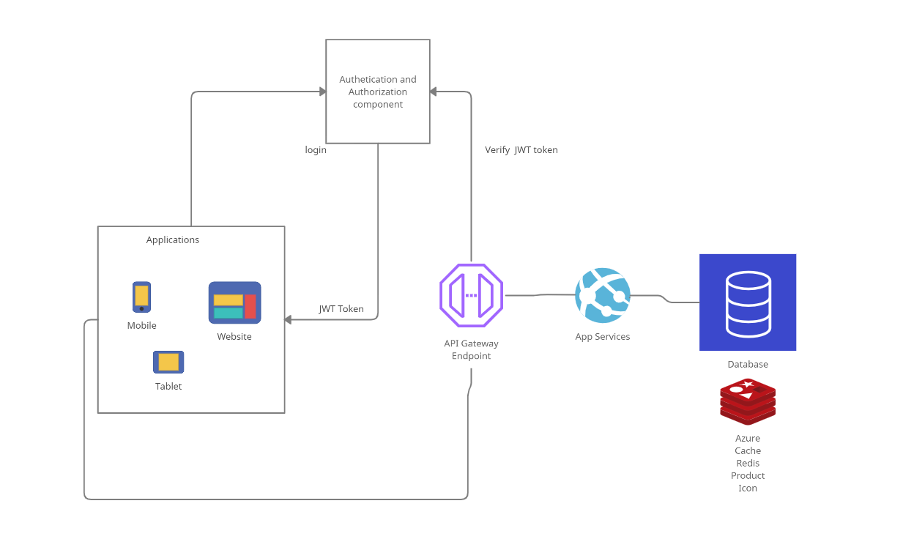

I do not know how the perfect software architectures are build. It is possible that perfect software designs are myth. The Myth of a Perfect Design
All successful products have working architectures that meets the engineering, operational costs as well as satisfy customer requirements. A thoughtful software design opens door for an organization to expand software design by adding new services to it’s umbrella easily.
This post may be helpful to a one man army with goal to learn and build a working software system. The post is limited to my knowledge and is open for feedback and suggestions. I will talk about following topics.
Considerations
I am considering security, auditing, diagnostics, hosting, scalability as mandatory requirements that software design needs to fulfill before release. Localization and analytics are to improve revenue and customer satisfaction.
Security
- User Data: All countries have specific requirements for user data handling like PIPEDA, GDPR. These policies needs to be respected and are very valuable to protect customer data.
- For healthcare application, additional requirements HIPAA more must be considered.
- Passwords in memory(Android, Windows, Browser process) needs to be encrypted. Otherwise, anyone can generate memory dump to read credentials.
- Diagnostics logs should not contain any sensitive information.
In general, taking legal advice from a domain expert about data handling is very helpful in initial phase of system design. I indicated only few laws that I am aware of, I am sure there are many more.
Auditing
The purpose of auditing is to identify who performed what action on data. For example, a bank employee can search his friend profile in bank information management system and can check his account balance. This action is not appropriate until the owner of account request any information. The bank employee can use his friend information to make some deals. If bank information management system is not saving every action of employee’s like who visited user profiles then in case of legal lawsuit bank can never identify who visited a customer profile to breach data.
It is important for an system design to track all the activity on data (who read, who write, who delete, when read/write..).
Diagnostics
Every components needs to have logs when an error/exception occurs. Without logs it will be very hard to understand the cause of issues. It will be great to have a log analysis system to look at critical events to notify the owner of component to make system more reliable.
Resilient system- when a service goes down, other instance of service will be immediately available to not impact customers.
A good error handling, diagnostics helps to make system more reliable.
Hosting
Hosting is an important topic that determines the cost of running a product. We can host components on Azure/AWS/Google cloud. It will be great to design system that can be hosted on any cloud provider.
Understanding the fundamentals of cloud security is must to deploy systems. All the cloud providers have certification courses to understand the basic concepts.
Scalability
Scalability helps to handle unpredicted load on system. It is easy to scale a product if the system design is divided into small independent components. A few concepts that can help:
- Containerized services to access database
- A caching system like Redis to handle frequent used data
- Load balancers to manage service containers
- Database sharding
- Appropriate database choice SQL/NoSQL
- Event based system to manage transactions (async queries)
Localization
Localization is to support multiple languages. Most of website provides option to choose language. Building system considering localization takes very less effort to launch product in other corner of world.
Analytics
Analytics helps to understand the product usage (example: the features mostly used by user. etc..). Most analytics frameworks provide extensions to build reports by easily integrating to database. If the data is scattered on multiple platforms, it may be more time consuming to analyze it. Frameworks
Components
Now, I will talk about the high level components of system design. Every component has many sub components that will be covered in individual blog posts.

Authentication and Authorization
OAuth is widely used authentication protocol. SAMP and OpenID Connect are used for authorization. It is very important to use central user login system to manage web, mobile user as a single source. The authentication and authorization component also serve the requests from backend to confirm authorization. Azure Active Directory B2C, Auth0 and AWS Cognito are few authentication and authorization platforms I am aware of.
Database
We need to understand SQl, NoSQL database to appropriately choose best database for a product. Addition in memory database like Redis or Memcached can be used for high availability.
API’s
API’s are used to access data from database or for delivering events to async queues. In my opinion, it is best to use containers for API’s or microservices. These containers can be managed by load balancers. Kubernetes helps for load balancing docker containers. We will look at Azure Kubernetes Service (AKS) in upcoming posts.
Applications
The product can delight customers only if user interface is designed considering customer requirements. We will talk about frameworks that can be used for to develop website. Mobile applications also plays a significant role in system design.
If application do not need to access OS specific concepts for Mobile, I think React Native and React can be best options to develop Android and iOS application and website.
KMM(Kotlin Multi Module) can be used to share code between Android and iOS to reduce development effort.